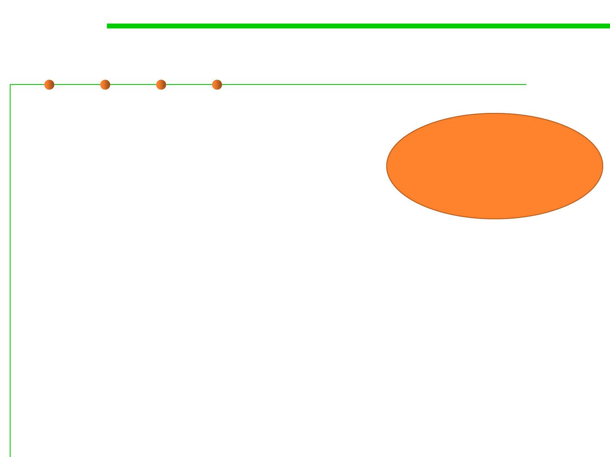

6.1 Metrics and Construction Principles for Maintainability
Examples of maintainability-oriented construction
▪ Modular design and implementation
– Low coupling and high cohesion
▪ OO design principles
– SOLID
– GRASP
These are what
to be studied in
this Chapter
▪ OO design patterns
– Factory method pattern, Builder pattern
– Bridge pattern, Proxy pattern
– Memento pattern, State pattern
▪ State-based construction (Automata-based programming)
▪ Table-driven construction
▪ Grammar-based construction